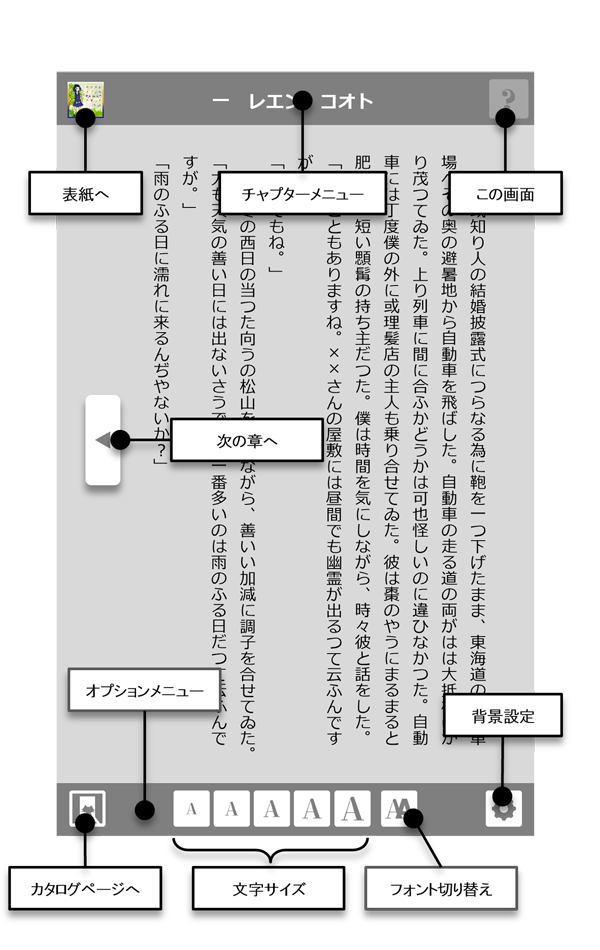
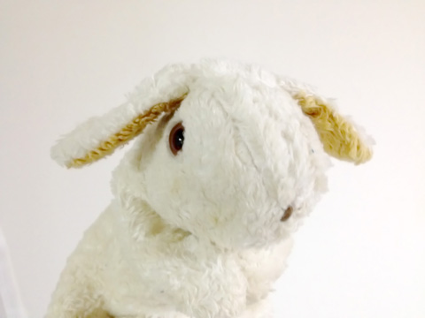
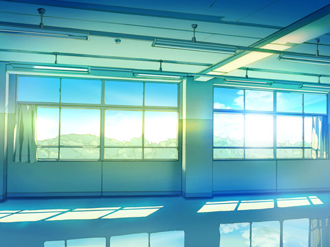
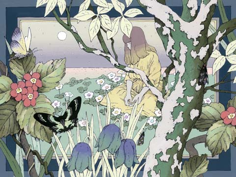
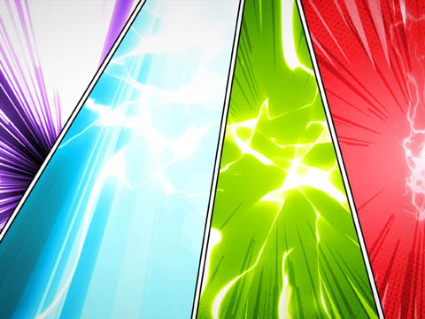
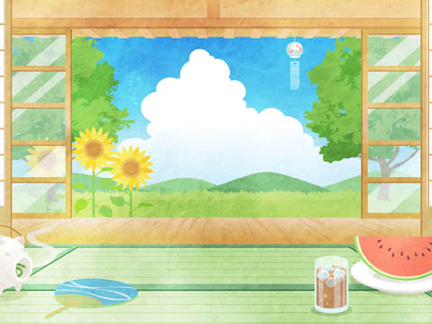
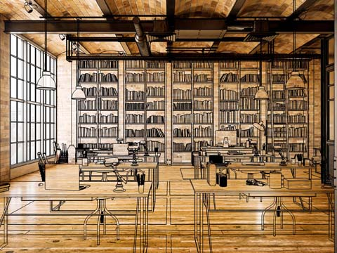
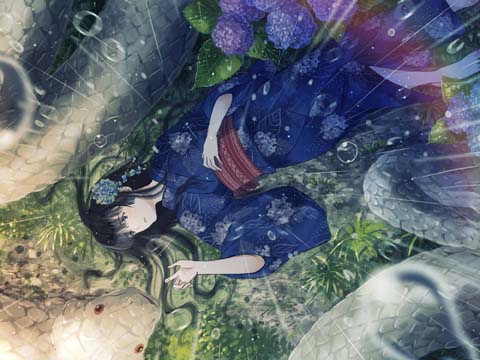
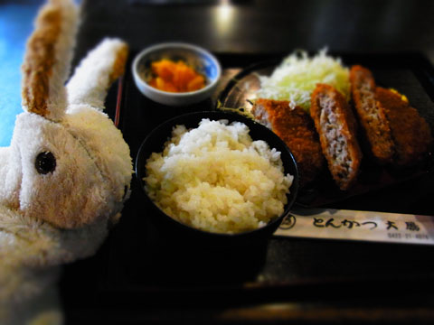
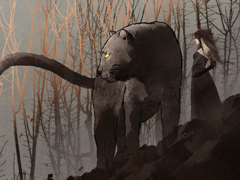

- 第１話 天文部の予報
- 第２話 お金を稼がなきゃ
- 第３話 生徒会長はだーれだ
- 第４話 零度のエクリチュール
- 第５話 皆殺しのドミノ
- 第６話 彼が自ら創りあげるもの
- 第７話 野生の思考
- 第８話 ニュー・アソシエーション
- 第９話 魔女っ子たちの神話
- 第10話 アウシュヴィッツの後に詩を書くこと
- 第11話 重力と恩寵
- 第12話 アブジェクシオン
- 第13話 コントル＝アタック
- 次回予告
- あとがき
第１話 天文部の予報
二〇二六年 二月 十八日
この日、イランでは断食月 が始まる。米国とイランはオマーンの仲介により、オマーンのマスカット、スイスのジュネーブなどで間接協議を行っていた。
この日、イランでは
Ａ 雨の魔女っ子寮
天文部の予報通り、朝からの雨。
やることなくて、使い魔ラプを足でぐりぐり。
きゅーきゅー鳴いて苦しんでるように見えるけど、足を離すとまた「やって！」って感じでまとわりつく。
ぐりぐり。
ぐりぐりぐり。
わたしが住んでいるのは、ウィッチリア魔女っ子部長国連邦村。魔女っ子だらけの村。それぞれの部活がひとつの国となって、魔女っ子連邦を形作ってる。とゆう村。
ラプと遊びながら、いまごろコートとレイチェルは部屋でセのつくことしてんのかなあって脳裏を過ぎる。ほんとならわたしがコートと結ばれるはずだったのに。コートと暮らせないんだったら、この村に来た意味もない――って思わなくもないけど、魔女っ子村作っちゃったの、わたしだもんな。投げ出すわけにもいかないし。
止まない雨。
廊下に出ると、魔女っ子見習いがきゃーきゃー言って走り回ってる。
「あっ！ アリスロッテ先輩！ 今日はどちらへ？」
この子はアルノ。
「便所」
「じゃあ、用が終わったら、一緒にかくれんぼしませんか？」
「そんなことやってんの？」
「そう、リリィとアオイとメグとわたしで」
「寮の中でかくれんぼして楽しい？」
「めっちゃ楽しいですよ！ 魔法アリで隠れて、見つかったら罰ゲームでブサイクとキスしなきゃいけないんです」
「そのブサイクの扱いよ」
ほんとはトビチノ村からの移民20人ばかりで暮らすはずだったけど、わたしを慕う魔女っ子百人と、トビチノ村で恋愛対象から漏れたブサイク百人がついてきた。おかげでいまの人口は２２５人。魔女っ子はみんな魔法院から来た子たちなので、勝手に魔法学校みたいなものが始まって、一応、正式な魔女っ子であるわたしと、フレア、グレイス、ヴェルデの４人が先輩扱い。残りは魔女っ子と言っても、見習い。あとは７００ほどのトロールが住んでるけど、この子らは無害でいい子。
アルノの部屋に行くと、ブサイクがひとり座らされていた。さすがにブサイクのなかでもマシなほうを選んで連れてきたっぽく、容姿はまあまあ。
「ほらほら！ ルシオ！ 魔女っ子学園の理事のアリスロッテ様だぞ！ ご挨拶は！」
「いいよー。理事ったって形だけだし。先輩でいいよー」
「こ、こんにちは」
「いまスカートのなか見たでしょう？ いーけないんだぁっ♪」
見習い魔女っ子のひとり、リリィがルシオって子の腕をスティックでグリグリ。やられてる子は顔だけ見るとヘラヘラ笑ってるけど、心中まではわかんない。
「負けたらこの子とキスするの？」
同意は？ って、わたしもそーゆーキャラでもないんだけど。
「そうです！ あ、でも、先輩、オニやりませんか？ わたしたち４人で隠れるんで！」
「ん。わかった」
ばたばたと部屋を駆け出す４人。
「もーいーかい」「まーだだよ」「もーいーかい」「まーだだよ」「もーいーかい」「もーいいよ！」
遠隔透視とヒートスフィアへの生体反応を使えば探すのは簡単なわけで、掃除用具入れでメグ確保、じゃがいもケースのなかのリリィ確保、ベッド下でアオイ確保、屋根裏でアルノ確保。簡単過ぎる。楽しいかこれ？
「罰ゲームはメグ～」
「きゃーやだー！」
「フッフッフ。ルールからは逃げられないのよっ！」
「あーもうしょうがないなー。やるから、ちゃんと口閉じててよねルシオ！ 舌いれたら殺すからね？」
なんて言いながらメグとルシオがキッス。
「10秒だからね！ 10秒！」
「舌入れろルシオ～！」
「んっ！ んんっ！」
２戦目、こんどはアオイが罰ゲーム。
「行け！ ルシオ！ おっぱい触れ！」
「ほらほらベロ入れなさいよ、罰ゲームなんだからぁ！」
なんだかなあ。
ブサイクもブサイクなりに役得というか、ぶっちゃけイケメンじゃないってだけで、ちゃんと清潔にして趣味は読書とバスケットボールですとか言われたら十分恋愛対象レベル。
「なんか、かくれんぼすぐ見つかっちゃうね」
「これいっそ、じゃんけんで負けた子が罰ゲームでよくない？」
「ええ～っ♡ やだぁ～♡」
「罰ゲームは、おっぱい揉まれながらキス」
「ええ～～～～っ♡」
と、４人はじゃんけん。もはや負けたいのか勝ちたいのかわからない。男子のラッキーエロエピソードには、「それただの性虐待被害じゃない？」ってのが混じってるけど、彼にとって美しい思い出になってほしいって祈るばかり。
「きゃ～、負けた～！」
「じゃあ、ブラウス脱いで！」
「ええ～～～～っ!? 聞いてな～い！」
男子はニコニコして降ってくるご馳走を待ってるだけ。
「アルノ、感じてるんじゃない？」
「相手はブサイクだよ？」
「悔しい？ ねえ、悔しい？」
「次はじゃんけん抜きで！ ブサイクが指名するのはどう？」
魔女っ子の上位グループが男子をとっかえひっかえ呼び出してるって噂は聞いてたけど、こんなことやってたんだ。
「ふたりきりで押し入れに入るの！」
「服は？ 服はどうする？」
まあこれも、魔女っ子寮ではありふれた日常で、かといってみんながみんなこうやってブサイクをイジって遊んでるかっていうとそうでもなく、雨の日は静かに本を読んだり、編み物をしていたりする子が多い。アルノたちが特別で、そのまわりには彼女らに憧れるグループがあって、そのなかの何人かがたまにここに加わって「罰ゲーム」の恩恵に与って、ピラミッドが構成されてる。
「ルシオー、おまえから動けよー」
「そのまま中で出しちゃえ！」
「えっ？ 今日はダメよ！ ルシオ！ 中で出したら殺すからね！」
そんで、ブサイクのなかにも「アルノたちのグループ」と接触できる「親衛隊」が形成されて、顔のよしあしでピラミッドが築かれてる。
顔ってのは不思議なもんで、猫背になって芸夢王カードやってるときはあんなにヒドイって思ってた顔も、アルノたちから無理やり風呂にいれられて、あの子たちが選んだ服を着せられて、それで何度かセのつくことなんか経験しちゃうと、なんてゆーの？ ほかのブサイクに対する優越感？ みたいなのが生まれてかしんないけど、それこそ「オレ、バスケやってます」みたいな顔になっちゃうと、もはやブサイクなんて呼べないわけで、ほんでそれは「どーせわたしたちの学校にはブサイクしかいない」って諦めてた並クラスの魔女っ子にも夢を与えるんだけど、魔女っ子とブサイクのやりとりはトップに立つアルノたちとその親衛隊が仕切ってて、なんか、恋愛協定みたいなシステムが出来上がってんの。
ブサイクな男子のなかにも、たまーにモテる子がいて、でもそういう子はグループのだれかに声かけられて召し上げられちゃう。そーするとあら不思議。猫背のオタクがバスケやってます顔の男子に大変身。並の魔女っ子からはちょっと遠い男子になっちゃう。そしてみんな諦める。男子はみんなかわいい子が好き。友だちとしては話してくれるけど、恋愛対象としては見てくれない。
んでこの恋愛協定システム、ぶっちゃけていうとセのつくことやりたい協定も、魔女っ子・ブサイクともに、その存在を知るのはピラミッド中流以上の選ばれたメンバーだけで、底辺の子たちは相変わらず。男女間に壁をつくって、「愛は純真で精神的なもの」って信じて、ブサイクはブサイクで固まってアルノたちみたいな軽薄な女子を蔑んで、下っ端の魔女っ子は下っ端の魔女っ子で彼女らに媚びる男を蔑んだ。いっそ底辺のブサイクと底辺の魔女っ子でくっついてしまえばお互いの「やりたい！」をぶつけあって解消できるものを、顔ってまるで磁石みたいに、はっきりとＳ極Ｎ極ってゆー色分けされてないと引かれ合うこともなくって、そのＳ極でもない、Ｎ極でもない子たち、底辺にいる金属塊？ 鉄くず？ たちだって、「やりたい！」を顔にしたみたいなイケメン・美少女に惹かれて、それでいて自分たちは見向きもされなくって、自分たちの尊厳？ 誇り？ を自分たちの内面に求めて、より一層闇の深いオタクになっていったのでした、みたいな。
そしてこの、底辺のブサイクと底辺の魔女っ子が、恋愛に対する深い思慮を語り合って、そこにシンパシーみたいなのを感じて打ち解けるかってゆーとそうでもなくって、たとえばカラダの接触だったらどこが感じる？ どんなプレイする？ って具体的に語れるけど、お互いに異なる闇を持った者同士が、独自に錬成した「内面」を語るわけでしょう？ それはたとえば、一方は「メカの変形合体と多元宇宙の解釈」で、一方は「戦国時代に散った武将の歴史のif」だったりするわけでしょう？ まあ、打ち解けるはずがないよね。お互いに「これなら顔だけの軽薄なヤツのほうがまだいい」とか言い出して、それはもう考え方もアルノたちと変わらないわけで、よくよく考えるとそこにあるのはピラミッドじゃないんだよね。非モテが勝手に掘ってはまった穴があるだけで、非モテが「ピラミッドの頂点」と思ってるのはただの「地表」だよ。
「ちょっとアリスロッテ！」
って、声をかけてきたのはＢ これからのこと
レイチェルとの約束の時間まで、まだ間がある。
学園はブサイクたちが突貫で作ってくれたもので、ほぼ完成してる。なんたって前巻ではメソメソポタポタミャアミャア文明の女神像に仕組まれた転送装置を蘇らせた子たちだ。神代のエルフや太古のノームに匹敵する謎の技術を持っている。と、そんな彼らの尽力でまあ、外面は出来てきたけど、学園というからには授業もちゃんとしたいし、カリキュラムも考えないといけない。やることいっぱいだね、アリスロッテ、って、コートのことなんて忘れて前を向かなきゃって思い直した上手いタイミングで、グレイスとでくわした。
グレイス・ミストは魔女っ子のひとり、ブルーポジションのウィッチ☆サファイアに変身する。知的でクールな優等生で、前巻ではわたしの先輩３人組とそこそこいい勝負をしたエリート魔女っ子。古文書部の部長で、風紀委員長兼任、それで図書館の管理も担当というスーパー優等生。
「ところで、ここの本ってどこで仕入れてくるの？」
「スーサの塔とニコラス・ケイジ天文台にあったものをそのまま借りパク」
「ひでえ。優等生ひでえ」
「鍵も持ってるから、夜中に忍び込んで何冊か追加してある」
「倫理観は？」
これからの学園の運営のこと話すと、「魔法院に知り合いのアテンディングがいるから、声をかけておく」って。アテンディングってのは、教授見習いとか、そういう意味らしい。
「見習いのみんなを魔女っ子にしてあげたいの」と、エリートの瞳がキラキラ。
「だよねー」
「そのためには、見習いの封印を各自３つ解かなきゃいけないんだけど、これを解けるのが第12階位以上の魔法使いで、わたしじゃ無理だから」
「グレイスたちって何階位だっけ？」
「２階位」
下から２番め。魔女っ子見習いは１階位。いままで聞いたなかでいちばん高いのが、カルガモっていうクソジジィの31階位なんで、いやあ、先は長い。ちなみにわたしは魔法院に籍がないから階位はナシ。そしてしばしの沈黙ののち。
「アリスロッテ。あなた、ヒミツは守れるひと？」って、グレイス。真剣な目。
「ええ、守れと言われれば」
「そう」と、静かに口に漏らして、一呼吸ののち。
「もし資金援助が必要なら、カイ州のマルロー伯に繋ぐことができる。……いろいろと問題のあるひとだから、反対する魔女っ子はいると思うけど、もし、どうしてもというなら」
「あ、うん、わかった――」
問題ってなに？ これだけの情報でなにをどう判断しろと？ とは思うけど、それをフランクに聞けるほど親密じゃない。
「資金のことは、いろいろ当たってみる」
ま！ 当たるアテなんかないけどね！
ついでなので温室。薬草部のヴェルデ・クローバーに会いに来た。
ヴェルデはグリーン・ポジションの魔女っ子。ウィッチ☆エメラルドに変身できる自然を愛する癒し系で、ハーブティとケーキ作りが趣味。小鳥と心通わせるナチュラリスト。以前わたしと戦ったときは、先輩３人に瞬殺されてたけど、自力で生き返った。
「アリ姉、こんちゃ」
出迎えてくれたのは、タルト・クローバーっていう魔女っ子見習い。魔女っ子唯一の男子で、ヴェルデの弟。２つ年下って言ってたかな。ヴェルデはたぶんわたしと同い年くらい。
「ヴェルデは？」
「ヴェル姉は水くみに。で、なにしに来たの？」
見習い用の魔女っ子服を着崩した男子。たぶんわたしより年下だけど、身長はかなり高い。というか、わたしが小ちゃい。
「ここの薬草、売れないかなと思って、相談しに来たの」
「あ、いいよ。まとめて引っこ抜いてやるよ」
「あ、まって。ヴェルデに許可取らないと」
「そんなの、あとでいいって」
と、タルトが薬草の前にしゃがみ込んだところで、
「タルト！ わたしがいない間に勝手なことしないのっ！」
ヴェルデの声。
助かった。
でもすでにタルトは２～３本薬草引っこ抜いてた。
「んもう！ 悪い子！」
ってヴェルデからゲンコツ食らって、「ちぇえっ」とか言って頭擦って、いつの時代の漫画だって感じだけど、まあ、いいか。とりあえずベンチに腰掛けて３人で話した。
「それでカクカクシカジカで、薬草をちょっと売れないかなーって思ってるんだけど……」
「そうねえ。薬草は買うと高いけど、売っても二束三文なのよねえ。売れるのは第２話 お金を稼がなきゃ
二〇二六年 二月 二十一日
米国大統領ドナルド・トランプは、イランへの限定攻撃を検討、イランとの協議は「10〜15日もあれば十分だ」「イランが意味のある合意に応じなければ悪いことが起きる」と発言。
米国大統領ドナルド・トランプは、イランへの限定攻撃を検討、イランとの協議は「10〜15日もあれば十分だ」「イランが意味のある合意に応じなければ悪いことが起きる」と発言。
Ａ デネアの提案
レイチェルとヒミツの相談を終えて、わたしは学園を出て魔女っ子寮へ。ふとその道すがら、大きなキノコに腰掛けた白いドレスの魔女っ子が目に入った。甘ロリのフィッシュテイルに、胸と頭にペールゴールドの大きなリボン。白いパラソル。
デネア姉さまだ……。
「ひさしぶり～♪ アリスロッテ～♪」
同郷のご近所さんだけど、いまじゃ敵か味方かわかんないクソ要注意人物。
「何しに来たの!? まただれかを拐いに来たんじゃないでしょうね!?」
「やだ、口ぎきの悪い子♪ それに、魔女っ子を拐っていったのはあなたじゃない？」
「わたしが拐った!? 魔女っ子たちは自分からついてきたの！ 自分の意志で！」
「あらそう♪ でも彼女らの親たちは、そうは見ないわぁ♪」
キノコに座って、白いパラソルをくるくる回すデネア姉さまと、軽く臨戦態勢のわたし。
「魔法院の学費がいくらか知ってるぅ？ 最低でも５千ゴールドよ？」
「それで？ なんの用？」
「魔法を使える子のなかで、地域の貴族に気に入られたラッキーな子だけが魔法院に通えるの」
わたしが聞いても、デネア姉さまはお構い無し。
「そこで３年過ごして『聖印』を受けて、卒業後は地元の貴族のお抱え魔法使いになる。その子たちがぁ、百人も失踪してるの。学費だけでも50まーんゴールドよぉ？」
「どういうこと？ それを払えって言いにきたの？」
「ええ～っ？ 払えって言ったら払えるの？ グレイス・ミストを知っているでしょう？ 彼女の地元からは学費のほかに20万の寄付を頂いてるのよ？ 足したらい～くらだ♪」
グレイスの実家、めっちゃ太いじゃん……
「いままで、ひとりふたりの失踪者はいたけど、ひゃーくにんって、魔法院の信用に関わるわぁ」
てゆーか、その話し方。
「魔女っ子をすべて魔法院に戻してーって言いたいところだけどぉ、まー無理でしょう？ それでぇ、もしあなたたちが魔女っ子学園を作るんだったらぁ、そこを正式に魔法院の姉妹校にしてもいいって、上のほうは言ってるの♪」
「上というと？ ベルカミーナが？」
「んーん♪ Ｂ ほかほかのパン
ぽーん ぷーん ぱーん ぴーん
生徒会長件理事長、アリスロッテ・ビサーチェから至急の連絡がある
各部の部長はただちに生徒会室に集まってくれ
繰り返す
各部の部長はただちに生徒会室に集まってくれ
ぴーん ぱーん ぷーん ぽーん
待つこと３分、各部の部長40人が生徒会室に大集合！
「部活って40もあったの？」
「実際にはもっとあるはずよ。ほかの部の部長と兼任してるコもいるんじゃないかしら」
「魔女っ子はたった百人なのに？」
「たいがいのコが４つか５つ兼部してる」
「なんと、そんなことが」
「それに、コーヒー部はブサイクたちがやってるよー」
「なんじゃそりゃ」
とーにーかーく！
「みんなに集まってもらったのは他でもない、部費のことについてだ！
現在、学校の運用資金についてはいくつか当たっているところだが、資金を頼めば、手綱を握られることになる。われわれが自由に活動していくために、まずは我々だけで稼ぎ出せるかどうかを試してみたい。その間の……半年から１年……各部の運営は厳しいものになるだろうが、どうか理解して欲しい！」
ざわざわざわ。
「なにか質問があるものは？」
「はい！ アメフト部です！」
魔女っ子の学校にアメフト部があるのか。それはそれで心強い。
「アメフト部はプロテクターを買うだけでたいへんなんです！ マワシ一本でできる相撲部といっしょにされたら困ります！」
「それはわたしたち相撲部に対する侮辱です！」
相撲部もあるのか。頼もしいぞ。
「わたしたち機織り部はどうすればいいんですか!?」
機織り部……。機織り機がなければはじまらんな……。
「わたしたち電車部は！」
待て！
（電車ってなんだ!?）
（なんかそういう……なんというか……概念みたいだよ）
（電車という概念？）
「電車部はイマジンで乗り越えてくれ！」
「だったら機織り部もイマジンで布を織ればいいわ！」
「待って！ それじゃあ機織り部の布を当てにしている水泳部はどうなるの!?」
「相撲部みたいにすっぽんぽんでやればいいでしょう！」
「それは相撲部に対する侮辱です！」
「とにかく！ とにかくだ！ １年乗り切ってくれ！ 金を稼ぐ手段はそれぞれの部で考えるとして、まずは自分たちでやってみよう！」
ふう。やれやれだわ。でもわたしには息抜きがある。
コートとレイチェルの愛の巣へ。
窓から覗いてレイチェルにサイン送って作戦開始。待ってるとすぐにコートが出てくる。レイチェルに頼まれて井戸に水汲みに。その隙にわたしはレイチェルの家に上がって、パイの実のヌードルになってハイエイトチョコつけてクローゼットに潜んでスタンバイ完了！
しばらくするとコートが「ただいま」って帰ってきて、ここからは見えないけど、レイチェル、コートをベッドへと誘う。
「でも、まだこんな時間ですよ？」
うう……コート。なんてうぶなの。駄菓子に時間なんて関係ないのよ。
「でも今日はまだだよ♡」
と、そのままチュッパチャップス♡ コートは「んっ」とか言ったまま押し切られてベッドへ。たまらん。わたしやばい。コートはベッドに座らされて、扉の隙間からじゃよく見えない。レイチェル「ちゃんと見て」って、コートの目の前にぷ・よ・ま・ん♡
「元気になった？」
「は、はい！」
「じゃあ、続きはコートが」って、コートの手を内紙にかけさせて、包み紙とってぇ、薄紙とってぇ、コートが下ろした内紙がつるんと取れると、「まだ触っちゃダメぇ」って、どっかからテープ取り出してコートに目隠し。仰向けに寝かせて「首輪つけてもいい？」って聞くと「ええ。いいですよ。レイちゃんが好きなように」って、悔しい。首輪ってなに？ どんなプレイしてるの？ こんなこと毎日してんだこのふたり。
そしてレイチェルが「じゃ、取ってくるね」って、おもむろにクローゼットの扉を開けて、うっふん！ ヌードルなアリスロッテ登場！
ベッドには眩く輝くコートのうまい棒！ つやつやの個装！ 先っぽだけちょっと覗いてる！ 眩しき！
レイチェルがコートの首に首輪をつけて、鎖をつないで、わたしにおいでおいでして、いよいよわたしの番！ 鎖を渡されて、ジェスチャーで、「指で、先っぽを、触って」って、アリスロッテ了解っ！
まずは指でツンツン。
あんあん。
反応良好！
あんまり大きい方じゃないけど、角度はばっちり。立派よ、コート、反り返ってるわ。心臓の鼓動が血液を送り出すごとにとくとくと上下する。シロップを垂らして先端ヌルヌル。手のひらを露出したところに押し当てると「あん」って声が漏れる。ふたつの玉羊羹に反対の手を添わせながら、手のひらでぐりぐり。ベッドの脇ではレイチェルが、ご自愛の栗しぐれ♡ 濡れた先っぽ。ゆっくりと個装を剥いて、ぷるんって甘栗むいちゃいましたぁっ！ コートがびくん。透明のシロップにねるねるねるね。ここはお口できれいにペロチュー。舌がさきっぽにふれるたびにびくんびくんって。経験少ない男子ってこんなに敏感なの？ これ、１回目はどうだったの？
ある程度すると、レイチェルから「召し上がれ」の指示。アリスロッテ了解っ！
コートにまたがって、おこしを浮かせて、コートのシュガーツイストをわたしのハニーディップに。ううう。この瞬間をどんなに夢見たことか……。まさかこんなシチュエーションで迎えるとは……。そしてふたりのドーナツはドッキング。ああん、熱い♡ 点でつながってるだけなのに、全身ガクガク。なんだろこのいままでにない感覚。スイーツ最高♡ 最高だわ♡
次の司令、チュッチュゼリーして……？ 次は？ 目隠しを取って……？ アリスロッテ了解っ！
お口に深く深くチュッチュゼリー、ちっちゃい舌、歯が当たる、リップの裏まで、ぜんぶペロティ。わたしのシロップはぜんぶコートのお口に。コートの荒い息遣い。悔しいわ。レイチェルだと思ってんでしょう。レイチェルのチュッチュゼリーだって。でもそうじゃないの。アリスロッテなの。チュッチュゼリーしたまま目隠しを取って、顔を離すと……コート呆然！ はーい！ アリスロッテでしたぁ！
「こ、これは!?」
「びっくりした？ いままでのアリスロッテだったんだよ!?」
って、紅潮した頬でレイチェル。
「ご、ごめんなさい、レイちゃん、アリスロッテさん」
きゃーっ♡ なんであなたが謝るのっ♡
コートはカラダを引こうとするけど、「ダメよ、ダメダメ、ちゃんと感想聞かせて」ってレイチェルがコートの手を握る。
「感想って？」
「アリスロッテのドーナッツ、美味しい？ わたしのとどっちがいい？」
「お、美味しくなんかないですよう。レイちゃんじゃなきゃダメですよう」
「じゃあ、なんでこんなに元気ハツラツなのぉ？ アリスロッテもこんな状態で終われないわよねー」
ううう。なんかごめん、コート……。でもおこしが動いちゃう。
「で、で、でも、ダメですよぉ！ アリスロッテさんとベビースターしちゃいますぅぅぅぅ！ 僕、レイちゃんとベビースターしたいんですぅぅぅぅぅぅ！」
あーん悔しくてますますスイッチ入っちゃう！
「ええーっ。やだぁ。そんなことになったら離婚しちゃおうかなぁ♡」
なにげにレイチェルが鬼♪
「そんなことになったら、ぼーぐーいーぎーでーいーげーまーぜーんーっ！」
こんこんこん。
「あれ？ お客様？」
「どうしよどうしよ。みんなもぎたてフルーツなんだけど！」
「コートが出て！ ヤバいものこれで隠して！」
って、フタバメロンシャーベットの容器を手渡す。
「ええーっ？」
やっぱ鬼だ。
コートがメロンの容器でうまい棒隠して、猫背で玄関行って、ドアあけると見習いの魔女っ子。魔女っ子、目を伏せる。
「アリスロッテさん！ 理事長室にお客様が見えているそうです！」
魔女っ子から見たら、メロンでうまい棒隠したコートの後ろに、ハイエイトチョコのマスク付けたわたしとレイチェル。なにを想像してるかわかんないけど、たぶん、その想像は当たってる。
「アリスロッテ先輩、ここにいるって聞いたんで！ い、いますぐ学園に来てほしいそうです！」
魔女っ子は走り去る。
純真だなぁ。若いっていいなあ。
「で？ お客様ってだれ？ 伝言ひとつちゃんとできないの？」
「いやいや、しょうがないって、このシチュエーションじゃ」
「とりあえず、続きやろっか、コート」
「や、やるんですかぁ!?」
レイチェルといっしょに梅ジャム塗ってペロペロしてたら遅れちゃった！
大急ぎで学校へ！ 理事長室に飛び込むとバカでっかいトロールがどーん！
「遅かったわね、アリスロッテ」
ホッ。グレイスが相手してくれてたみたい。
「ちょ、ちょっと離せない用事があって。ところで、こちらのトロールさんは？」
「おまいがここん責任者ばいね！ さっきから何べんでっちゃ言うとっばって、抗議しに来とったい！」
「ええっと……抗議というと？」
「なんか、うちの魔女っ子……宝飾部の子たちが、勝手にトロールの鉱山で石を掘ってたらしいの」
「宝飾部が……？ もしかして……宝石を掘り出すため……？」
「そげんて。おいだんのじっちゃんの山ん勝手ん入って、勝手ん掘っとらすと。もう、なんばしよっとかーちおらんだっちゃ聞きゃせんけん、おまや舐めくさっとったらぼてくりこかすぞ、なんばにやがっとーとかちゆーて、こげんこげーんしてやったったい！」
「…………」
「先祖代々掘ってきた鉱山に、勝手に侵入されて採掘されたそうよ」
「な、なるほど」
「なるほどちゃなんか。ひとごとんごつなんばゆーとっとか。ゆっとくばって、おまいんこっちゃけんね。わかっとーとか。わがんこつぞ」
「まって。ちょっとまって。ええっと、わ、わたしが自分たちで稼げって言ったせいで……？ こんなことに……？」
「そうみたいね――」
「稼ぐち言うたっちゃぞ！ そげんひとんとこん来て稼いでよかならおいでっちゃこのへんば掘り散らかしてよかごつなるばって、そいでよかとかっちゅう話やろうが。そん理屈んわからんなら、けーさつ呼ばにゃいかんたい、けーさつ」
「ああ、ちょっとまって、あの、はい、ええっと、ちょっとだけ、ごめんなさい」
「いま表面化してるのは宝飾部だけだけど、園芸部やハンティング部がなにをやらかすか考えると……」
「そのへんばうろーんころーんさるきよらすとが、その園芸部やらハンティング部げな。ぞーたんのごつばさらかおらすたい」
「わかった！ なんとかする！ わたしがちゃんと言って聞かせる！ ところでその、宝飾部の３人は？」
「心配せんでっちゃ、ちゃんと生かして檻に入れとるけん。死んじゃおらんめーたい」
（どういう意味？）
（心配しなくても、生かして檻に入れてるから、死んではいないだろう、って）
「ばってん、返して欲しかなら、落とし前ばつけないかんばい」
「落とし前ったって……わたしたちお金とかないし……」
「なんば言いよっとか。金で解決でくるわけなかやんか。ほかほかパン第３話 生徒会長はだーれだ
二〇二六年 二月 二十三日
首都テヘランの大学などで学生らが政府に対する抗議デモを実施し、体制を支持する人々との衝突が発生。
首都テヘランの大学などで学生らが政府に対する抗議デモを実施し、体制を支持する人々との衝突が発生。
Ａ それぞれの十字架
そんなわけで、フルト・グレイド魔法院の姉妹校になったわたしたちウィッチリア魔女っ子部長国連邦村学園に、学園長として派遣されてきたのはなんと！ トレンチの襟を立てた不機嫌眼鏡の男！ 第32階位魔法使いにして※１：メタは、自らの尾を噛んで環となった蛇または龍のシンボルで、太古の神のうちの一柱。始まりも終わりもないことから、永遠、不滅、完全性、死と再生、永劫回帰を表す象徴として、古くから神話や錬金術で使われてきた。魔法を発生させる源泉そのものに作用させる上位魔法はメタ魔法と呼ばれ、世界を創生した神々にもアクセスすることができる。
Ｂ 民主主義とは!?
中庭をとぼとぼ歩いていると、ヴェルデに呼び止められた。
「あのね、アリスロッテ。お願いがあるの」
ああ、はいはい。今度はなに？ どうせよくないことでしょ？
「この生徒会長選から、降りてほしいの」
あったり～。
中庭を歩きながらヴェルデと話した。
「この生徒会長選は、学園長が言っていた第４話 零度のエクリチュール
二〇二六年 二月 二十四日
アメリカ軍制服組トップのケイン統合参謀本部議長はトランプ大統領に対し、イランへの軍事作戦は長期の紛争に巻き込まれる重大なリスクを伴うと助言。トランプはこの報道を否定、攻撃は自らが決断すると主張した。
アメリカ軍制服組トップのケイン統合参謀本部議長はトランプ大統領に対し、イランへの軍事作戦は長期の紛争に巻き込まれる重大なリスクを伴うと助言。トランプはこの報道を否定、攻撃は自らが決断すると主張した。
Ａ 死せる魔女
ベルカミーナの訃報を受けて、わたしと生徒会の３人はフルト・グレイド魔法院へと向かった。デルクモで馬車を借りて、カムドの形だけの検問を越え、テルル精王国の市街地を抜けて、魔法院正門。上空には暗雲が浮かんでいる。
「あれ、ゴルジ体って言われてるんだけど、どういう意味？」
「ゴルジ体ってのは、人間の細胞の中にある小器官。薄膜が入り組んだ形をしてて、タンパク質の生成や運搬を担ってるって言われてる」
「それがなんで魔法院上空にあるの？」
馬車は軽快な足取りのまま、ゴルジ体の下へ。
「さあね。ギー学園長の言葉を信じるなら、世界の細胞分裂へと向けて、新しい細胞質を作り出してるんでしょうね」
あらためてその、ゴルジ体を見上げる。
「グレイス、細胞って見たことあるの？」
「見たことあるって、人間の身体はすべて細胞でできてるのよ？ 毎日目にしてるわ」
「でも、ゴルジ体とか細胞質とか見たわけじゃないじゃん。なんでそんな、見てきたように言えるのよう」
遠くから暗雲に見えたものは、折り重なる薄膜の襞。その襞の周辺に薄い雲の塊のようなものが生成され、それが空に溶け出している。これがこの世界の細胞質を作り出してるという言葉に、一定の説得力を感じる。
「図書室に図解してる本があったよ。こんど一緒に見よっか」
「知ってるけど」
「卵子に精子がくっつくと分裂を始めるんだよ♡」
「それが男のキンキンと女のランランで作られてるって話でしょう？ それも男女の性交を描きたいだけのＢ 魔女っ子、初営業！
聖堂を出ると、ゴルジ体が淀む空に大きな帆船が浮かんでいた。
「あれは？」
「ガンフ・オルアの飛行船じゃないかな。なんどか見たことあるよ」
「あんなものが空飛ぶんだ……」
「ガンフは、魔法とはちょっと違ったナゾ技術持ってるから」
４人でぽかーんと、ガンフの飛行船を見上げた。
「お上りさんみたい」
「みたいじゃないよ。お上りさんだよ」
馬がぱからんぱからん。ひひーん。
「そのト書きどうなの」
「ト書きを読めるスペシャル能力もどうなのよ」
「ウィッチリア魔女っ子部長国連邦村学園の方ですね!?」
って、馬上のひとから尋ねられる。
「そうだけど、邪魔でした？」
「いいえ、第５話 皆殺しのドミノ
二〇二六年 二月 二十六日
ジュネーブで高級レベル協議。米国のウィトコフ中東特使やジャレッド・クシュナー氏、イランのアラグチ外相らが参加し、一時は「重要な進展があった」と報じられた。
ジュネーブで高級レベル協議。米国のウィトコフ中東特使やジャレッド・クシュナー氏、イランのアラグチ外相らが参加し、一時は「重要な進展があった」と報じられた。
Ａ 街道の襲撃者
ランタンの火が踊り、影が揺れる。Ｂ 魔法銃クルシン・デシネ
「さっきはごめんなさい。悪気はなかったの！」
両手を合わせてフレアが謝る。
「わかってる。スグリもいつもより具合はいいみたい」
無表情にラズベリィが答える。
「ホッ、良かった」
って、フレアの顔に少し笑みが戻るけど、
「でも、二度とあんな魔法かけないで」
って、ラズベリィの顔が綻ぶことはなかった。
「ごめんなさいっ！」
フレアの平謝り。
「それより、なんでタニシなんか食べたの？」
わたしが訊くと――
「それは……」
と、ラズベリィが視線を流した先には、一枚の肖像画があった。
「あれは？」
「ドミノ将軍……この国の英雄なの……死んじゃったけどね。将軍が死んでから、この国のひとはみんな貧乏」
肖像画の下にはテーブルがあって、一冊の本が置かれていた。ドミノ将軍が書いた自伝的小説、『泥の第６話 彼が自ら創りあげるもの
二〇二六年 三月 一日
二月二十八日、米軍はイランへの大規模な戦闘を開始、最高指導者ハメネイ師死亡。女子小学校にも３発のトマホークミサイルが打ち込まれ多数の児童が死亡。イランは報復としてイスラエルやバーレーン、カタール等周辺地域の米軍施設を攻撃。
二月二十八日、米軍はイランへの大規模な戦闘を開始、最高指導者ハメネイ師死亡。女子小学校にも３発のトマホークミサイルが打ち込まれ多数の児童が死亡。イランは報復としてイスラエルやバーレーン、カタール等周辺地域の米軍施設を攻撃。
Ａ 第６モックスサイト
三ツ杉の宿でグレイスたちと合流、ラプ――手のひらサイズのわたしの相棒――が迎えてくれた。ことのあらましはフレアから説明。それぞれの部屋で一晩を過ごし、翌朝は早目に発ち、昼過ぎにはチミノーの港につく。
「肩に乗ってるのは、ミニチュア・モックスかい？」
ハーディ・ガーディが尋ねる。
「そうだよ。よくわかったね」
ベルカミーナは手乗りモックスって言ってたけど、同じ意味だと思う。
「わかるとも。一見するとリスに見紛うが、毛並みや顔つきを見れば明らかだ」
なにそれ。文語体？
「ラプには秘密があるんだよねー」
わたしは肩から腕へとラプを走らせながら、ラプに話しかける。
「ほう。どんな秘密が？」
「言ったら秘密にならないでしょ」
「はっはっは。それもそうだ。これは一本取られたな」
いつの時代のひと？
船は乗り合いもあったが、資金は（ヒゲのおじさんの手元に）ふんだんにある。魔法船をチャーター。貴族や王族が乗るヤツ。船主はわたしたちの出で立ちを見て訝しげな顔を見せたが、金を見せるとほろほろに綻んだ。
海へ。ゆっくりとはしけを離れて、おもむろに速度を上げる。魔法船の足元に響く振動は、遠くに幻想の調べを浮かべる。船体が波を超えるたびにその波動は高まり、Ｂ 生体人形
爆発音。一斉に鳥が飛び立つ。二度、そして三度。わたしは箒を駆って空へ。風に揉まれながら見渡すと、立ち上がる土煙が見える。マリウスはおそらく例の光の剣で戦っている。カルガモの戦い方は知らない。ラプはおなかのあたりにしがみつく。立体機動戦を得意とするマリウスが森にいるのはどういうわけか。囮になるとはいったものの、カルガモの姿は見えない。ただ、ふたりの交戦地点が少しずつ移動しているのはわかる。それを追うしかない。驚いた小鳥のように視界を遮るもののない空へと出たのに、そこで小鳥と同じ不安に駆られる。第７話 野生の思考
二〇二六年 三月 三日
米・イスラエルの攻撃が３日目に入り、イラン政権は存続しているものの攻撃は継続。アメリカ側は「最も激しい攻撃はこれから」と示唆。イランによってホルムズ海峡が閉鎖され、物流への影響の懸念が広がる。
米・イスラエルの攻撃が３日目に入り、イラン政権は存続しているものの攻撃は継続。アメリカ側は「最も激しい攻撃はこれから」と示唆。イランによってホルムズ海峡が閉鎖され、物流への影響の懸念が広がる。
Ａ 試される理性
生徒会室にて。
「でも、こうも考えられる」
グレイスが言った。
「カルガモット卿は、シシリールーにコデックス・オブ・ライフを渡したくなかっただけで、魔法院がコデックスを廃棄するなんてのはウソ」
黒板には勢力図が描かれている。魔法院という大きな枠のなかに、シシリールー派閥、カルガモ派閥のふたつの円がある。
「いまさらそんなこと言われても。あのときはマリウスがボロボロにされてたし、わたしが勝てるとも限らなかったし……」
わたしの反論はディミヌエンド。
「そのことはいいのよ。なにがどう動いているかを検討しているの」
「カルガモット卿は、コデックスがシシリールーの手に渡るより、ガンフ・オルアに渡るほうがマシだって思ったってこと？」
ヴェルデが頬に指を当てて尋ねる。
「そうよ。カルガモット卿は騎士団と内通している」
と、グレイスはカルガモ派閥から、騎士団へとチョークを走らせ、
「その件で、魔法院での立場が怪しくなっている。ここでシシリールーがコデックスを手に入れて力を持つと――」
コデックスの絵をチョークでとんとんとん。
「カルガモット卿は魔法院を追われ、孤立する」
チョークを置いて手のひらをぱんぱんぱん。
「だれが本当のことを言って、だれが嘘をついているのか……。これはね、わたしたちの理性が試されてるの」
って、グレイスはわたしの方をチラリ。
「でも、シシリールーとカルガモだけで魔法院を語るのって、大根と玉子だけでおでんを語るようなものじゃないの？ 長老のなんとかとか、双児がなんたらとか……」
そこにがらがらがらっと戸が開いて、フレア。学園長に呼び出されてたけど、戻ってきた。
「おかえり。ギー学園長、なんの用だったの？」
まあ、時期が時期だし、魔法院とのトラブルの話かと思ったら――
「魔法院が、魔女っ子を一人派遣してほしいって」
「派遣？」
「派遣ってなに？」
「形式上は留学生ってことになる」
留学生にしたって、初耳。
「えーっ。なんかそれ、人質を差し出せって言われてるみたいで気持ち悪いんだけど」
と、ヴェルデはワニのミルク飲んだみたいなイヤーな顔。
「じゃあ、どうする？ だれか募集する？」
「違うよ。見習いは含まず、正式な魔女っ子からひとりだから、この４人の内だれかだよ」
「ええーっ。なんて答えたの？ 断ったよね？」
「断ったけど、断れないって」
「どういう意味？」
「魔法院から資金提供受ける時の条件にあったんだって。年間何人までの交換留学に無条件で応じる、って」
えーっ。そんな細かい条件まで気にしてなかったよーう。
「そういうことなら、仕方がないわね」
ヴェルデはため息をひとつついて、背もたれに背を預ける。
「モノには『マナ』が宿るって、わたしのお婆ちゃんが言ってたわ。贈り物をあげると、それには『マナ』――魂みたいなもの？――が宿ってて、受け取った側はそれに縛られる」
「なにそれ、呪い？」
そんな呪いのせいか、みんなどんより。だれかなんか楽しいこと言わないかなって思いながら、心のなかで楽しいことを探す。楽しいこと、楽しいこと。遠足とか、運動会とか。あとはまあ、ごはんだな。食ってりゃハッピー。
「ねえ、学園祭やらない？ わたしたちで」
って、口火を切ったのはフレア。
「わたしも言おうと思ってたの！」って、ヴェルデ。
「ずるい！ わたしもそれ言おうと思ってた！」って、わたしも急いで乗っかる。
「学園祭ね……」
「って、グレイスは乗り気じゃないの？」
「悪くはないけど、お金がかかるわよ？」
って、結局はお金かあ。
「まあ、お金はともかくだよ！ わたしたちでなにかできることを探そうよ！ 最悪みんなでポルカ踊るだけでもいいわけだしさ！ それがわたしたちの学園祭なんじゃない!?」
フレアの熱弁。
「そうね。じゃあ、学園祭の実行委員長は、盛り上げ係のアリスロッテで！」
「あ、わたし？」
というわけで、学園祭を開くことになったわたしたち！ いまは留学のことなんて考ええないで楽しもう！ と思って駆け込んだのはとうぜん駄菓子屋のレイチェルが部長を務める錬金術部！
「ねえ、レイチェル！ 学園祭開くんだけど、お安く開けるナイスアイデアないっ!?」
「あぶっ！」
レイチェル、謎の奇声を発して薄い本をしまう。
「その本どうしたの？ Ｂ 密室監禁！ 姉と弟のタマタマビタビタ！
「第８話 ニュー・アソシエーション
二〇二六年 三月 五日
日本人二名がイランから退避。現地の日本大使館が手配した車で首都テヘランから陸路で移動し、４日午前５時ごろ、隣国・アゼルバイジャンの首都バクーに到着。同日、日経平均株価が史上５番目の下げ幅を記録。
日本人二名がイランから退避。現地の日本大使館が手配した車で首都テヘランから陸路で移動し、４日午前５時ごろ、隣国・アゼルバイジャンの首都バクーに到着。同日、日経平均株価が史上５番目の下げ幅を記録。
Ａ ですの系の転校生
雨の日だった。
ヴェルデがまとめた荷物が濡れないように、ポーチぎりぎりまで馬車を寄せて、傘をさしていた。
「いろいろ気がかりなことはあるけど、あとは頼むわ」
ヴェルデは寂しさを笑顔で隠して、その上に雨の雫に濡れた髪先を貼り付けていた。
「大丈夫よ。Ｂ 時空の檻
ウィッチリアに戻ると、黒とマジェンタのフリフリのゴスロリ服で黒いパラソルをクルクルと回して大きなキノコに腰掛けたベルカミーナがいた。体はわたしの同郷のデネア姉さま。それをベルカミーナが乗っ取ってる。説明終わり。
「新しい仲間が増えたのね？ おめでと～♪」
ベルカミーナが、チノのことを言ってるのかラズベリィのことを言ってるのかは不明。
「今日は何をしにいらしたのですか、マイ・マスター」
わたしから見たらベルかミーナはクズなんだけど、グレイスたち魔女っ子にとっては大切な師。丁寧に話しかけるの見て、複雑な気分。そしてその身体。デネア姉さまも負けず劣らずのクズなんだけど、こうやって体を乗っ取られてることを思うと、これもまた複雑な気分。
「そろそろお爺ちゃん先生を閉じ込めておく檻を作りたいな～♪ って思って相談に来たの♪」
さらっと笑顔でコワイことを言う。ま、通常運転。
「お爺ちゃん先生というのは大審問長官にてアーチ・コンシストリー、カルガモット・アナス・ゾノリンチャのことですの？」
「あら、スゴイじゃない、新入りの子♪ カルガモ卿のフルネーム覚えてるなんて♪」
「おそれいりますの。わたしは、カルガモット卿のニュー・アソシエーション所属、コガモ隊隊長、チノ・リキューですの。第９話 魔女っ子たちの神話
二〇二六年 三月 七日
アメリカのトランプ大統領はイランに対して無条件降伏を求めると主張。ＣＮＮのインタビューで、イランの指導部は「今や完全に無力化されている」との認識を示すが、実情では苦戦を強いられていた。
アメリカのトランプ大統領はイランに対して無条件降伏を求めると主張。ＣＮＮのインタビューで、イランの指導部は「今や完全に無力化されている」との認識を示すが、実情では苦戦を強いられていた。
Ａ リヴァイアサン
「出たな！ Ｂ 未開のひとびと
日も傾く頃、キャバレーロが戻った。コボルトの村長の家の離れにしつらえられた騎士団の集会所で、キャバレーロと話す。ベルカミーナとの関係のことが脳裏にチラチラ浮かぶけど、いまそんな場合じゃない。
「マルロー伯の侵攻を抑えたいの。力を貸してもらえる？」
「もちろん。こちらもそのつもりで動いている」
味気のない問に、味気のない答え。でもとりあえず良かった。
「そのつもりって、どこまでの覚悟がある？ アルミナ姫の代わりに騎士団の長に収まる気はある？」
「それは難しいな」
前のめりになった途端の失速。
「俺は、死んだことになってる。すでにアルーネ公の采配で従兄弟がクロワ家の跡取りになって、俺は……魔法院に洗脳されたデネアを刺して、その場で毒を飲んで死んだことに……」
「なにそのオペラみたいな話」
「俺も最初に吟遊詩人に聞かされたとき、面食らったよ。でも、その話で酒場じゅうの冒険者が涙を流すんだよ。口々に魔法院への呪詛を唱えながら」
なんてこった。
「アルーネ公はマルロー伯の配下に入ってるの？」
「入ってるどころか、主力部隊だ。俺とデネアの物語に感化された志願者が腐る程押し寄せてる」
「どうすんの、それ」
「もっと強い物語を被せるしかない。アルミナ姫とファデリー閣下の兄妹愛の物語を」
「……物語か……それを書けそうなひと、心当たりある……」
でも、そのやり方が正しいの？
「そうか。それは良かった」
まあ、やるしかないか。
「……それとあの……責めるわけじゃないんだけど……あなたが抱いたデネア姉さま、中身はベルカミーナって魔女なの。知ってたならごめんなさい。あなたが騙されてるといけないと思って」
「俺が……抱いた……？」
「とぼけなくていいよ。別にあなたがだれを抱いたって、わたしには関係ないし。あなただってそうでしょう？ お互いを縛るような関係じゃない」
「いや……夢に見たことはあったけど……デネアがここに来たことはないよ？」
「夢……？」
もしかしてベルカミーナ、夢の世界でキャバレーロをブチ犯した？ そんな能力ってあるの？ いや……死んでも生き返った女だぞ？ ありえなくない。
「でも良かった」
「良かったって？」
「お互いを縛る関係じゃないって、君が考えてくれてて」
「ああ、うん」
なんか、恋人を前提としたみたいな会話で、ちょっと痛いこと言った気がしてた。
「俺もう、５人の子の父親なんだ。まだ生まれてないけど」
おいおいおいおい。まてまてまてまて。今更そんなことで絶望もしませんけど。はしゃぎすぎでしょ。
ポチ村を発つとき、エレーナが教えてくれた。
「キャバレーロはいまも第10話 アウシュヴィッツの後に詩を書くこと
二〇二六年 三月 九日
イラン周辺国からの退避に備え、自衛隊機がモルディブへ出発。米国は特殊部隊を投入する計画を競技しているとメディアが伝える。
イラン周辺国からの退避に備え、自衛隊機がモルディブへ出発。米国は特殊部隊を投入する計画を競技しているとメディアが伝える。
Ａ 永遠の平和のために
Ｂ 垓亜駆軸
「――という、第11話 重力と恩寵
二〇二六年 三月 十二日
商船三井が所有するコンテナ船がペルシャ湾で攻撃受け船体の一部損傷。トランプ大統領は「イランには攻撃目標が残っていない。戦争はまもなく終わる」との認識を示す。
商船三井が所有するコンテナ船がペルシャ湾で攻撃受け船体の一部損傷。トランプ大統領は「イランには攻撃目標が残っていない。戦争はまもなく終わる」との認識を示す。
Ａ 愛と死のドミノ
羊がいっぱいいた。
ラズベリィと草っ原に寝転んで、雲を見上げた。
「羊っていいね」
「めえめえ鳴くしね」
Ｂ 蠢くものたち
とある村を訪れた旅人が言いました。
「この村の女たちはみな働き者で素晴らしい」
その言葉は、女たちをエンパワーメントして、そしてその村の者は、ことあるごとに、「この村の女は働き者だ」と口にするようになりました。
だけど日が経つに連れ、その言葉はいつか「この村の女は、働き者であるべきだ」を意味するように変わっていったのでした。
さて、どこで変わったのでしょう。
繰り返し言われたからですか？ それとも、男たちが言外にそれを期待したからですか？ わたしはそのどちらでもないと思います。言葉は、現実を描写すると同時に、現実を規定するんです。すべての言葉、すべての物語がそう。言語化によって『アイデンティティ』が生まれる。まったくなにも意識しなかったとしても、言語化は、そういうもの。
第12話 アブジェクシオン
二〇二六年 三月 二十日
十九日、「世界中から戦争がなくなりますように」と記された、白い花を咥えた一羽のウサギが座っている水彩風の作品が公開され、政治姿勢を示す投稿に嫌悪感を示すコメントがついた。トランプは「48時間以内にホルムズを解放せよ」と最後通牒を突きつける。
十九日、「世界中から戦争がなくなりますように」と記された、白い花を咥えた一羽のウサギが座っている水彩風の作品が公開され、政治姿勢を示す投稿に嫌悪感を示すコメントがついた。トランプは「48時間以内にホルムズを解放せよ」と最後通牒を突きつける。
Ａ お金で買えないもの
「お金で買えないものってさあ――」
って、茶室でのチノとの話。レイチェルのこと考えながら、とくに深く考えもなしに口にしてた。
「いろいろあるよねー。友情とか、愛とか、あと、幸せ？」
なのに。チノから返ってきたのは――
「そんなことありませんの。それらはお金で買うことができますの」
身も蓋もない予想外の答え。
「友情買える？ 愛も？」
「買えますの。大人の社会では常識ですの」
「ひゃー、大人汚い～♪ でもさあ、じゃあ、お金で買えないものはないってこと？」
「そうは言いませんわ。お金で買えないものがただひとつだけありますの」
「ただひとつだけ……って、そこでもったいつけないで、ぜんぶ言いなさいよ」
この喋り方って、オタクあるあるなんじゃないかな。オタクは焦ったときわざとどもるし、驚いた時に「ドキッ」って口で言うし、アニメ仕草が身についてる。話の途中で「なぜだかわかる？」っていちいちもったいつけて言うヤツはリアルにはいない。
「お金で買えないもの。それは、てんてんてん、母」
てんてんてんって。
「母？ 父は買えるの？」
「買えます」
「えーっ。わかんないわかんない。説明求む」
「んー、それにはまず、貨幣経済の話からしなければなりませんの」
「あー、うん、お金の話だからね。簡略にお願い」
「まず前提として、貨幣経済のまえに、物々交換の流通があったという説は、聞いたことありますの？」
「あ、なんかそれ、まえもちらっと聞いた気がする。そうじゃないって話だっけ？」
「そう、貨幣経済のまえにあったのは、交換経済ではなく、共有経済。共有している財を必要なひとが必要なだけ使う。いまも家族ではそうしていますけど、それと同じですわ」
「あーわかるわかる。丸ボーロとか黒棒とか戸棚にあったの勝手に食べてた」
「チロリアンとか、ひよことか」
「あとよく博多のＢ 学園祭強行！
学園に戻ると、チノの姿はなかった。幾人か残った魔女っ子見習いに聞くところでは、魔法院へ帰ったのだという。たしかに、ウィッチリア学園はもう機能していないし、交換留学も意味を失った。
そしてこんな状況でありながら、トイレの浄化槽そばに芸夢王カード部は残っていた。
わたしは、魔法銃クルシン・デシネを持って、芸夢王カード部を訪ねる。部長第13話 コントル＝アタック
二〇二六年 三月 二十七日
イランはアメリカからの停戦要求を拒否。逆に「賠償金の支払い」や「戦闘再開を防ぐ仕組みの確立」など５つの条件をつけてアメリカへ返した。劣勢に立つ米国は最後通牒は突きつけたものの、地上部隊の投入は引き伸ばしている。
イランはアメリカからの停戦要求を拒否。逆に「賠償金の支払い」や「戦闘再開を防ぐ仕組みの確立」など５つの条件をつけてアメリカへ返した。劣勢に立つ米国は最後通牒は突きつけたものの、地上部隊の投入は引き伸ばしている。
Ａ 漂流 せよ！ 少女たち！
楽屋。
「わたしね、一度だけ物語を書いたことあるの。小学校のころ」
「え？ アリスロッテが？」
「どんな話を書いたのかしら。興味あるわね」
「森の昆虫たちが、丸太の船にのって海を目指すの」
「動物じゃなくて、昆虫？」
「なんのために？」
「なんのためってゆーか、なんだろう」
つっこみまちの空白。でも、とくになんもなし。
「いまだったら考えると思うの。どんな目的で、どんな葛藤があって、苦難があって、海へ行けば何が変わるか、そこにちゃんと全員でたどり着けるのか」
「そうそう、そこを知りたいのよ」
「だよねー。でもとくに、なにも考えてなかった。ただ、海が見たいってだけで、丸太の船に乗った」
がらがらっ！
「出た！ シーケンスを変える雑なＳＥの地の文！」
「志賀直哉もよくやってる」※たまにしかやってません
「開幕です！ みなさん、ステージへ！」
はじめて夢の遊眠社の舞台を見たとき、客入れに古いアニメの主題歌が流れ続けていた。宇宙少年ソラン、風のフジ丸、鉄人28号、エイトマン……。まだ、オタクって言葉が生まれたばかりで、宮崎勤が例の事件を起こす少しまえ。わたしたちの舞台は、ウィッチリア学園の特設ステージで幕を開けた。
そこに観客はいない。だけどわたしたちにはＢ ああ、スペクタクルよ、永遠なれ！
ルシーニーへの無茶な侵攻で、あとがき
奥付
© 2022 sayonaraoyasumi novels / Uruba Linn
この作品の著作権は愁羽淋が有しています。著作権者の許可なく改変することを禁じます。
This work is copyright 2022 Uruba Linn. It may not be modified without permission of the copyright holder.
著者 ：愁羽淋
出版 ：さよならおやすみノベルス
出版日：2026年 2月 22日
ツール：でんでんコンバーター、Sigil、VScode、PowerPoint









